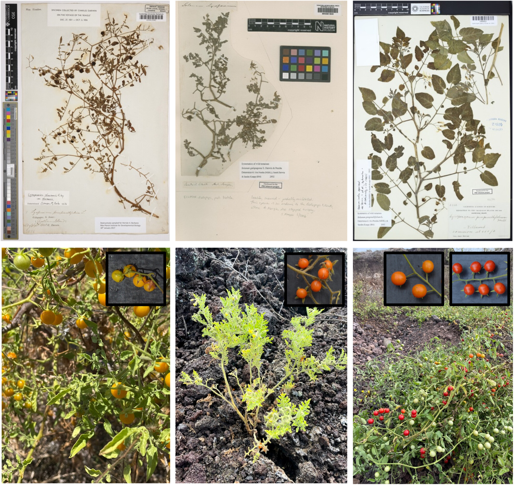
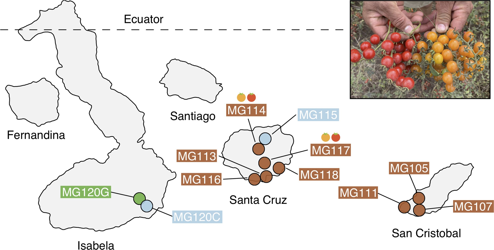
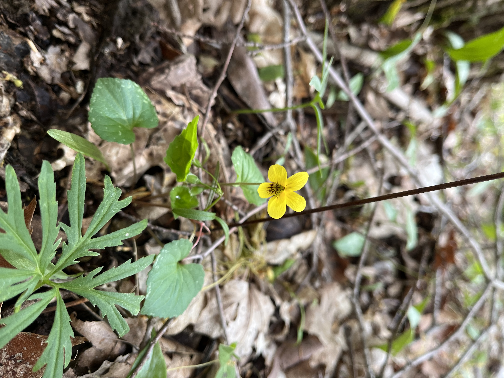
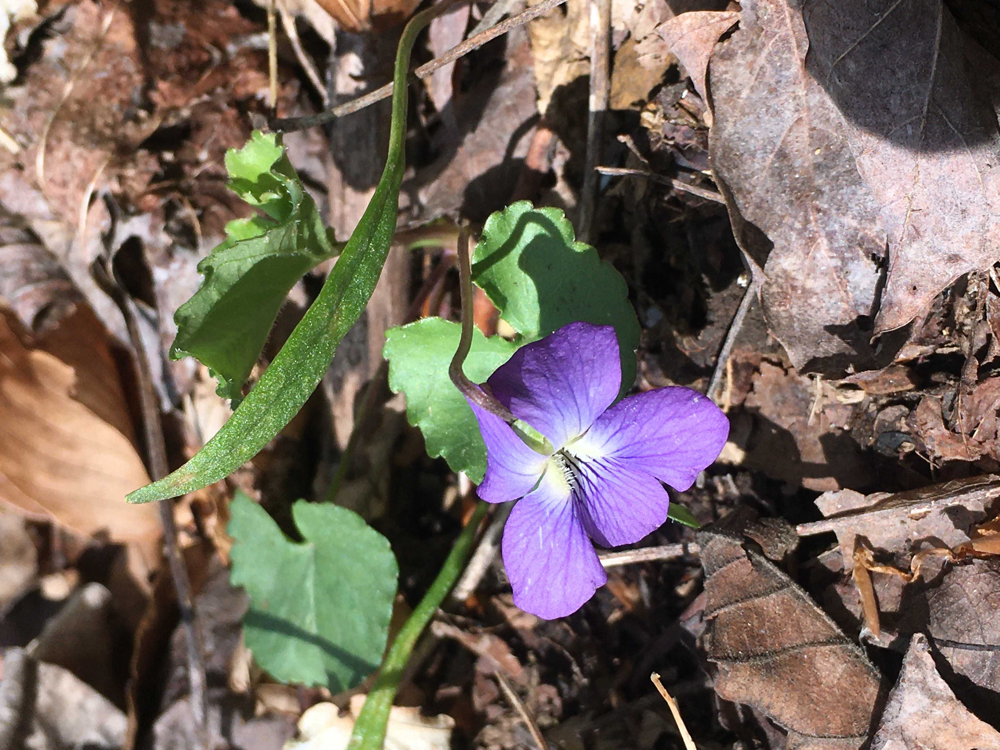

Check out the organisms we focus on in our research!
Solanum species

Fig. 1 from Kutza, Hert, and Moyle, 2026: Wild tomato species on the Galapagos Islands. (Images: L. C. Moyle). For more details, check out the publication here

Fig. 1 from Gibson et al., 2021: Geographic distribution of focal sampling sites on the Galápagos Islands. For more details, check out the publication here
Viola species

Violet image captured in the field by PhD student Caroline Edwards

Violet image captured in the field by PhD student Caroline Edwards